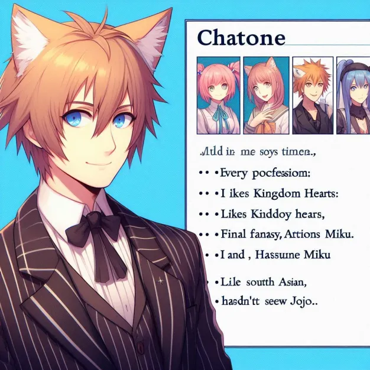

Chatoine
Chatoine est un homme d’une trentaine d’années, facilement reconnaissable grâce à ses oreilles de chat qui bougent au gré de ses émotions. Véritable couteau suisse humain, il semble avoir exercé toutes les professions possibles, mais il joue surtout un rôle de prof à l'IUT, où son style décalé et ses anecdotes improbables marquent les esprits.
Côté passions, Chatoine est un geek accompli : il voue un amour inconditionnel à Kingdom Hearts et Final Fantasy, qu’il considère comme des chefs-d’œuvre intemporels. Grand fan de Hatsune Miku, il écoute ses morceaux en boucle avec une ferveur presque religieuse. Cependant, malgré son expertise en pop culture, il n’a jamais vu JoJo’s Bizarre Adventure, une lacune que ses amis ne manquent jamais de lui reprocher. À cela, il répond souvent avec un sourire en coin : "J’ai d’autres quêtes à finir avant celle-là."
Toujours entre sérieux et excentricité, Chatoine est un personnage attachant, mi-professeur, mi-héros de JRPG, qui semble tout droit sorti d’un univers parallèle.
